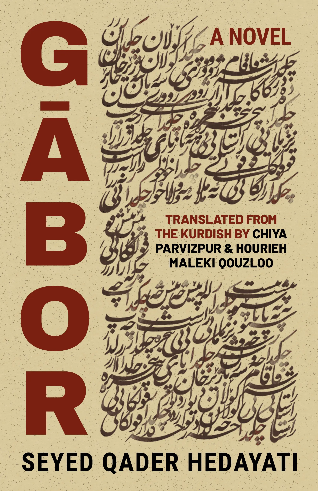
GABOR
Seyed Qader Hedayati, tr. Chiya Parvizpur & Hourieh Qouzloo
We're an independent, nonprofit press based in Columbus, Ohio, dedicated to bringing experimental Kurdish literature to the world. Our books span fiction, poetry, and creative nonfiction from emerging and established writers from the homeland and diaspora. In the face of ongoing genocide, ethnic cleansing, and generations of censorship, we believe in the power of literature to resist and reclaim our narrative. As a Kurdish-owned press, we champion innovative works that disentangle Kurdish literature from its reductive portrayal as stateless and foster a deeper awareness of our art and culture.

Seyed Qader Hedayati, tr. Chiya Parvizpur & Hourieh Qouzloo
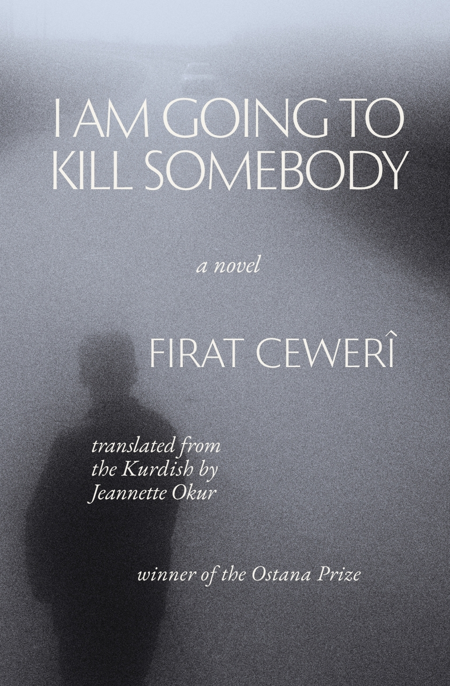
Firat Ceweri, tr. Jeannette Okur
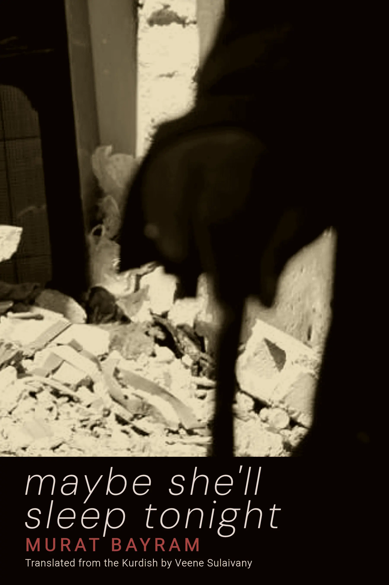
Murat Bayram, tr. Veene Sulaivany
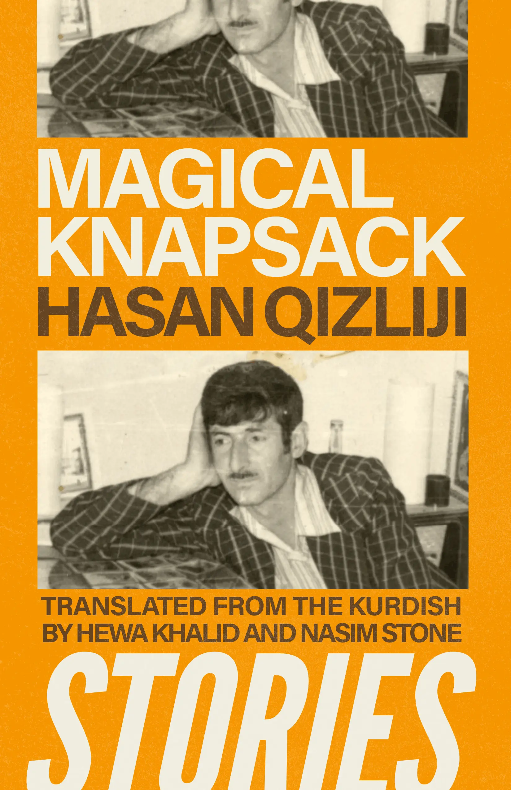
Hasan Qizilji, tr. Hewa S. Khalid & Nasim T. Stone
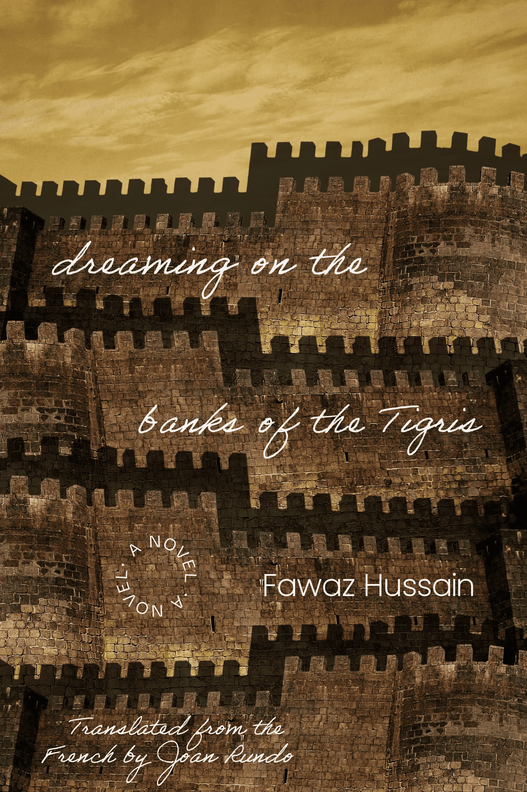
Fawaz Hussain, tr. Joan Rundo
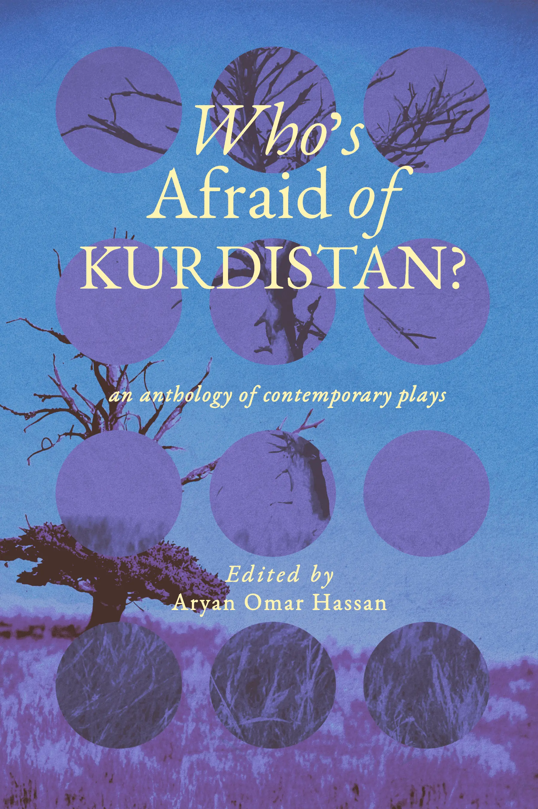
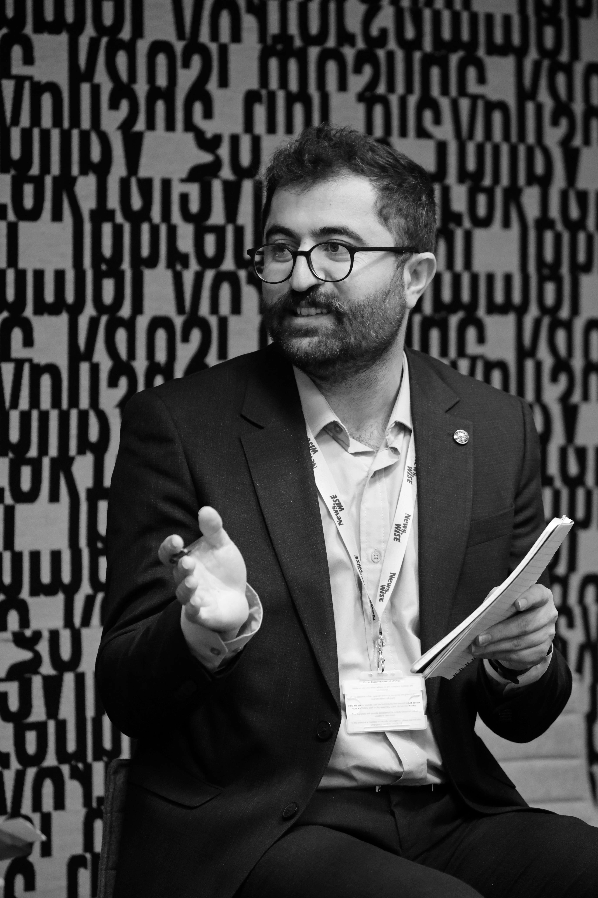
Murat Bayram is a stringer for The New York Times and founded Botan International in 2020, the first Kurdish media training office in Turkey, and Botan Times, now the most-read Kurdish news site. Throughout his 15 years in Kurdish media, he's worked as a reporter, editor, and chief editor, while freelancing for The New York Times, BBC, The Guardian, Middle East Eye, Deutsche Welle, and Al Jazeera. His first book, Belkî Îşev Binive (Maybe She'll Sleep Tonight), was published by Avesta in Istanbul in 2018. He's also co-authored a Kurdish-Turkish journalism glossary focused on gender issues, translated 11 books, edited 57, and wrote the screenplay for Mûzîka Li Pişt Sînoran (Music Beyond Borders). He's won several awards from the Journalists' Association of S.E. Turkey for his Kurdish news programs and interviews, and now sits on the jury for Kurdish journalism categories. He's completed fellowships at Oxford University and with The Guardian Foundation, and has taught literary journalism, rights-based journalism, and mobile journalism in both Kurdish and Turkish. Through Botan International, he's coordinated 18 projects backed by organizations like the UK Embassy and Reporters Without Borders. In 2023, RSF named Botan International one of its 12 permanent partners worldwide.
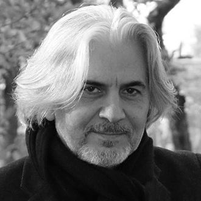
Firat Cewerî (b. 1959, Dêrik, Mêrdîn) is a Kurdish writer and translator who has profoundly shaped modern Kurdish literature. Exiled from Turkey to Sweden in 1980, he published his first book that same year and has since produced forty works: twenty original books and twenty translations into Kurmanji (Northern Kurdish). His translations range from Dostoevsky and Steinbeck to Swedish masters including Hjalmar Söderberg, Tomas Tranströmer, and Astrid Lindgren. In 1992, Ceweri founded the influential literary journal Nûdem (New Time), which he published for a decade to develop Kurdish literature and support emerging writers. He later established Nûdem Werger (New Time Translation) to bring world literature into Kurdish. His novels and stories have been translated internationally and adapted for film and theater. A Swedish Writers' Union member since 1987, he has served on the Swedish PEN board and chaired their Writers-in-Exile committee. He contributes regularly to Sweden's major newspapers and has received prestigious honors including the Swedish Academy's Interpretation Prize (2018), the Golden Pen Prize from Northern Iraq (2020), the Swedish Academy's Promoting Swedish Culture Abroad Award (2023), and Italy's Premiere Ostana International Prize (2024).
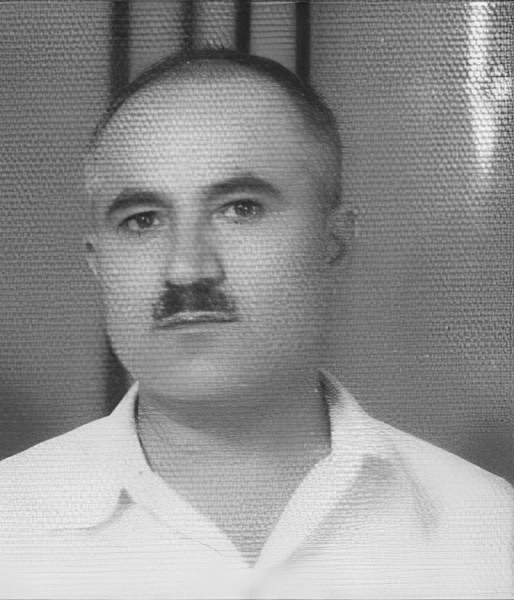
Hasan Qizliji (1914–1985), from Bokan in Eastern Kurdistan, was a Kurdish author, translator, activist, and journalist. He translated significant works from Farsi, Turkish, Bulgarian, and Arabic into Kurdish and helped found the Kurdistan Republic of Mahabad in 1946. After its collapse, he fled to Iraqi Kurdistan and later Bulgaria. Following the 1979 Iranian Revolution, he returned to Iranian Kurdistan only to be arrested by the newly empowered Islamic Republic for opposing its doctrine of one state, one religion, one language. Despite being over 70 years old, he was hanged on September 28, 1985.
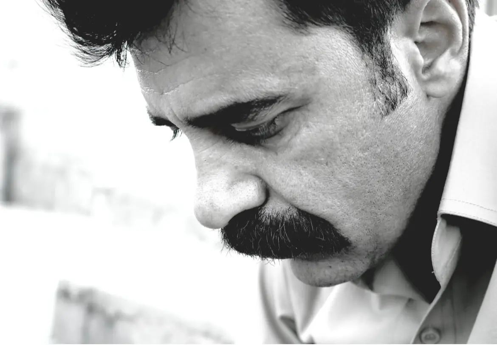
Seyed Qader Hedayati (b. 1976, Bukan) is one of the leading experimental novelists in contemporary Kurdish literature. Hedayati's novels include The Echo of a Full Stop (2000), The Yoke of Azazel (2012), Gabor (2017), The Grave City (2019), and Bardinah (2022). Beyond fiction, he has shaped Kurdish literary discourse through his essay collections Kurdish Prose and the Change of Form and Stone on Stone, and his translation of Bahram Bayzaie's The Truth and The Wise Man.
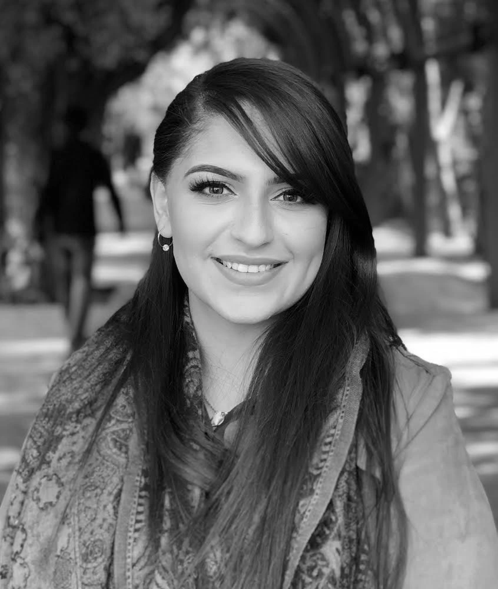
Veene Sulaivany is a freelance translator and editor with a background in education and academic editing. She holds a Bachelor's degree in Public Policy and a TESOL (Teaching English to Speakers of Other Languages) certificate from York University in Toronto, Canada. Her previous work experience includes two years as an ESL (English as a Second Language) teacher, a short stint as a transcriber for the BBC Istanbul office, translation work for Botan Times, and a role as editor for EnTr, a scientific editing company where she edited numerous academic papers. Maybe She'll Sleep Tonight (by Murat Bayram) marks her transition into book translation from Kurdish (Kurmanji) to English.
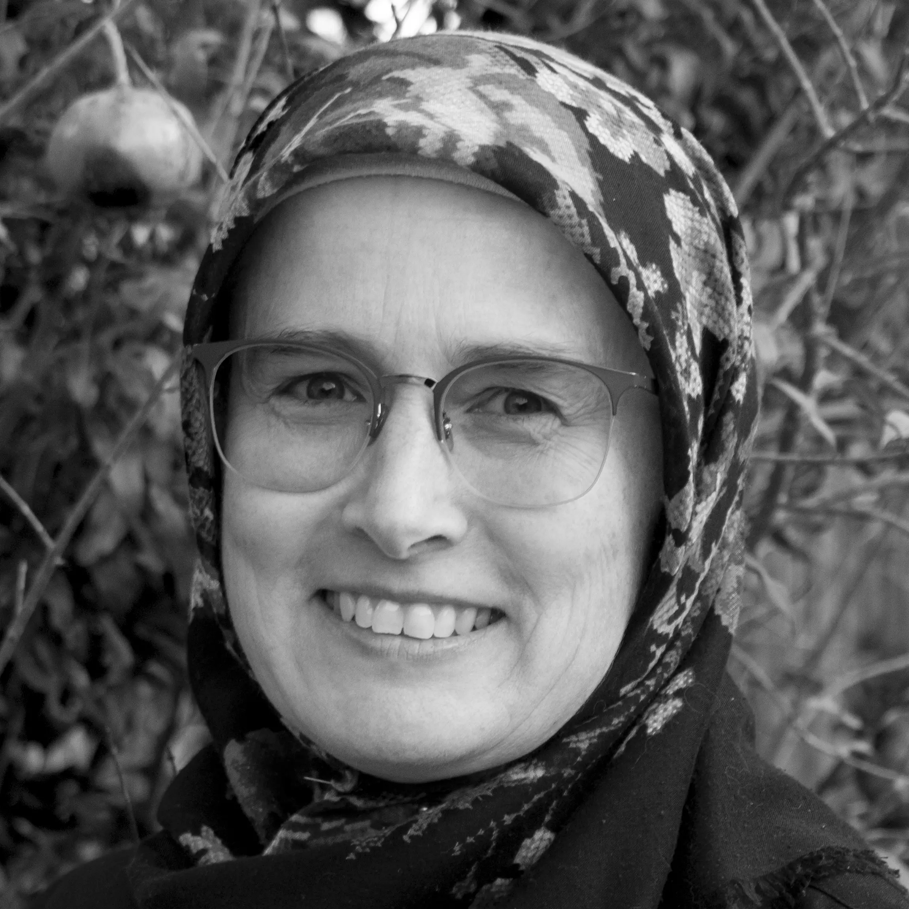
Jeannette Okur is a multilingual educator, translator, and researcher who has coordinated the Turkish Studies program at the University of Texas at Austin since 2010, where she teaches courses on language, literature, film, and cultural studies. Her research examines perpetrator-victim dynamics in political violence, focusing on identity, trauma, and displacement in Turkish- and Iraqi-Kurdish exile literature. She authored the open Turkish textbook Her Şey Bir Merhaba ile Başlar! (2021) and is developing Sinema Tutkusu: Turkish Language and Culture through Film. Dr. Okur earned her Ph.D. in German Language and Literature from Ankara University in 2007 and is currently studying Kurmanji at Zahra Institute in Chicago.
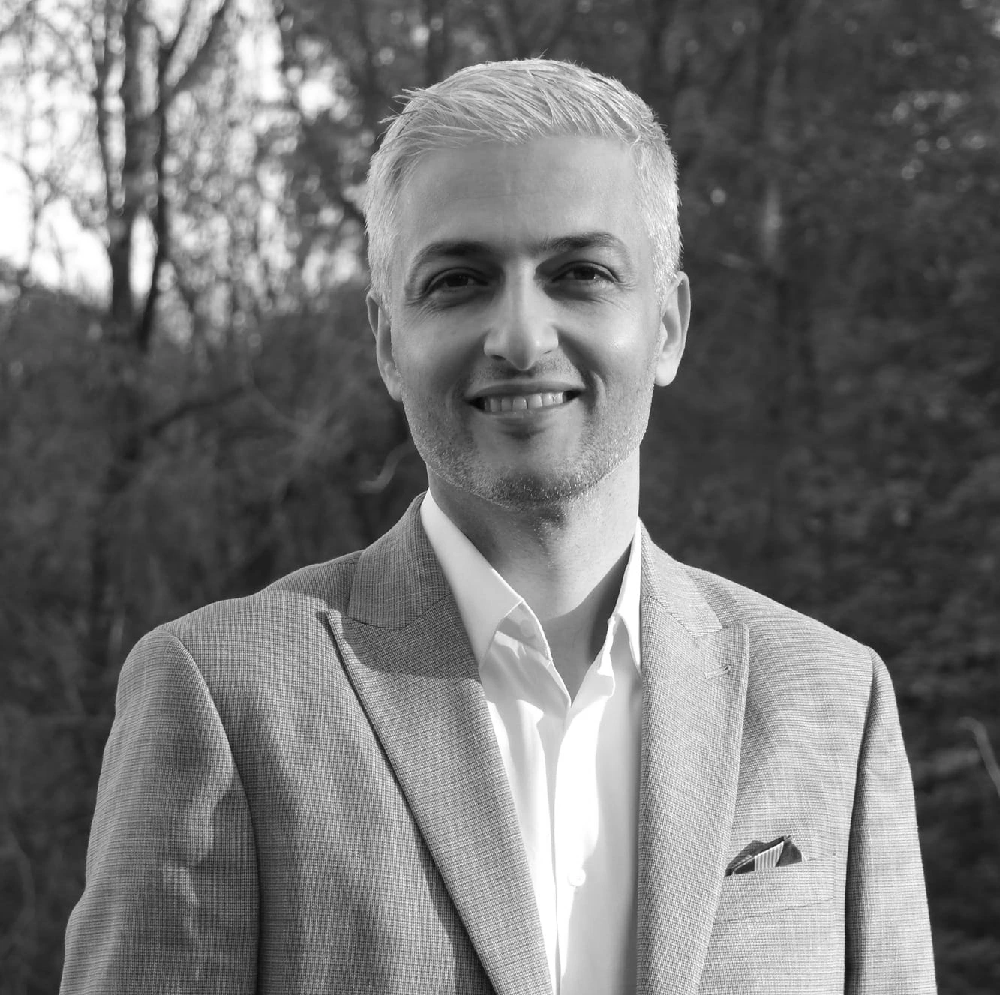
Hewa S. Khalid is a Kurdish author, scholar, and translator, currently a lecturer at Indiana University. His work mostly focuses on Kurdish language and literature. He has authored and co-authored numerous books and scholarly articles on Kurdish studies, including a chapter in the Oxford Handbook of Kurdish Linguistics. He is also active as a translator and his last co-translated book with Nasim T. Stone 'Hero of the Kurdistan Republic: Memoir of a Revolutionary Captain' will be published by McFarland in Jan. 2027. Khalid has studied and taught across different parts of Kurdistan, the United Kingdom, and the United States, bringing a transnational perspective to his works. He holds a PhD in Kurdish Language and Culture from Dicle University, an MA in Kurdish Studies from the University of Exeter, and a BA in Kurdish Language and Literature from Koya University. He works in multiple languages, including both dialects of Kurdish (Central/Sorani and Northern/Kurmanji) and English.
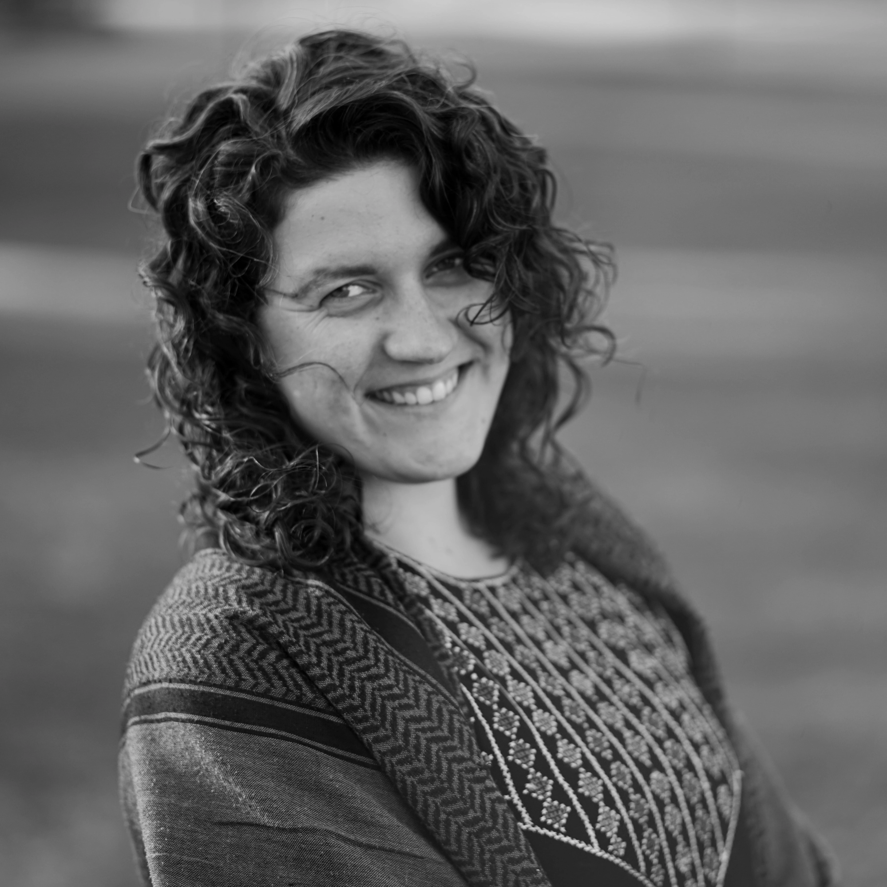
Nasim T. Stone is a PhD student, translator, and artist who received her Bachelor of Science in Art Practices at Portland State University (Oregon) and her Master of Arts in Comparative Literature from San Francisco State University (California). Broadly, her research focuses on Kurdish literature, material culture, ecological narratives, and folklore. She has presented her work on Kurdish tattoo practices in the United States as well as Southern Kurdistan. Her most recent co-translated work with Dr. Hewa S. Khalid is Hero of the Kurdistan Republic: Memoir of a Revolutionary Captain set to be published by McFarland in early 2027.
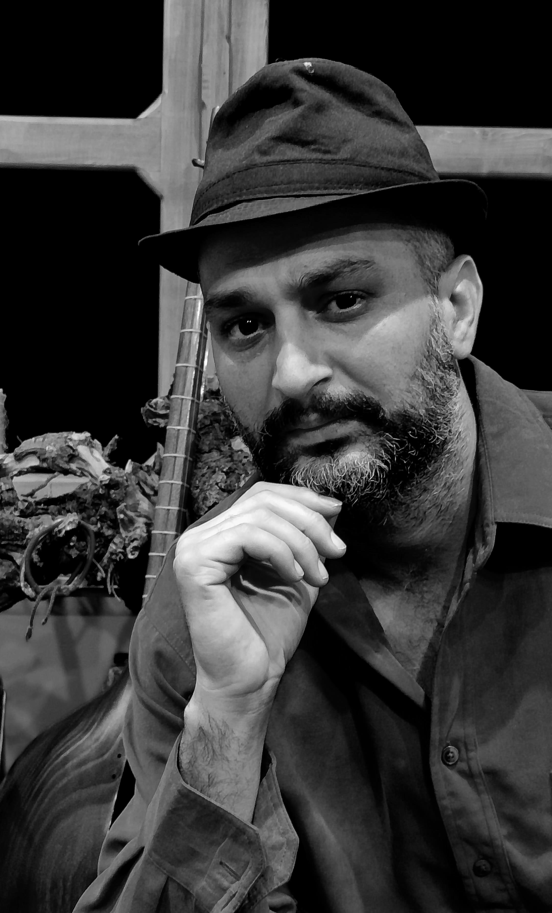
Chiya Parvizpur (b. 1989, Sanandaj) is a Kurdish writer and translator working in both Kurdish and English. His work has been published by Transnational London Press, Whisper House Press, Henar Press, and Common Notions. His debut novel, The Smell of Wet Bricks, was published in the UK, while his second, Twenty-Four Seconds of Shehin's Life, received the prestigious Kal Literary Prize in Kurdistan. Parvizpur's fiction employs a unique blend of Kurdish surrealism rooted in political realities he terms 'SoorAl' (Reddish). He has translated notable Kurdish novels into English including Ata Nahai's Birds in a Gale, Dealing Helaleh's Destiny, Seyed Qader Hedayati's Gabor, and Jiyar Jahanfard's The Shadeless Border. A dedicated Tembur player, Parvizpur embeds Kurdish tradition within his creative practice as a vital form of resistance. He is currently writing his third novel.
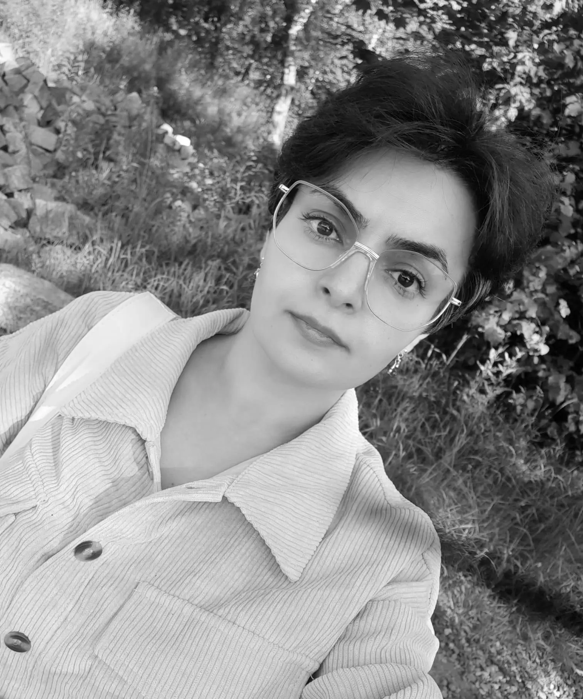
Hourieh Maleki Qouzloo (Huri) is a multilingual writer, translator, and researcher with over two decades of teaching experience across language and literature. Her literary and academic work centers on themes of identity, hybridity, and displacement. Huri is passionate about fostering cultural exchange through literature and education and is actively engaged in translating contemporary Kurdish literary works into English. Her published translations include Ata Nahai's Birds in a Gale and Seyed Qader Hedayati's Gabor. She holds a second Master's degree in English and Literacy Studies from the University of Stavanger and is pursuing research on cultural hybridity in migration literature.

Aryan Omar Hassan is the founder of Henar Press, a nonprofit that publishes experimental Kurdish writing, and maintains the Kurdish literary database. Based in Columbus, he has previously lived in Oslo, Stockholm, Sulaymaniyah, Abu Dhabi, and London, and holds degrees from The Ohio State University.

Hannah Fox is a PhD candidate at the University of Leeds, UK, funded by the Arts and Humanities Research Council. Her research focuses on literary representations of bibliomigrancy and censorship in twenty-first century world literature. She has a Masters degree from Queen Mary University in London, where she researched Kurdish literature as minor literature. Before returning to academia, she worked in various roles in the education and charity sectors and she continues to volunteer as an advocate for refugees in her community.
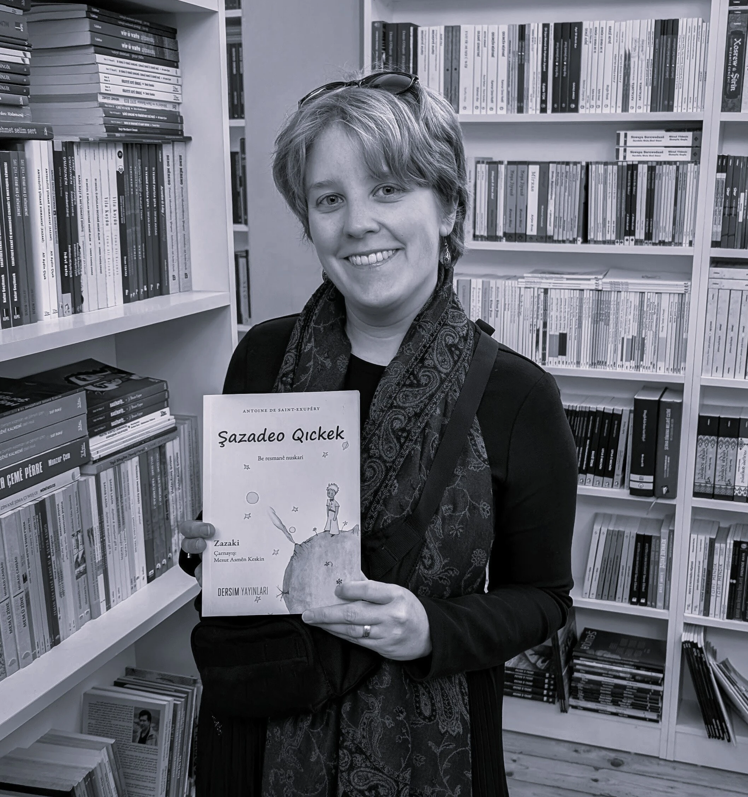
Brooke Bakan is an educator and a language enthusiast. She has studied Kurmanji both formally as a recipient of the Foreign Language and Area Studies Fellowship at the University of Pennsylvania and informally in her mother-in-law's kitchen.
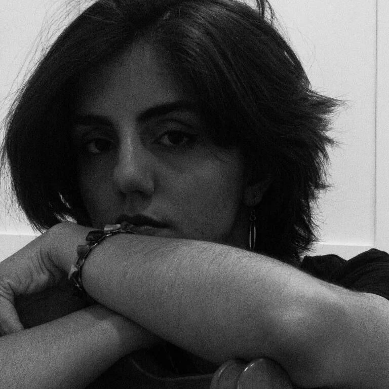
Nawa is a poet, translator, and writer. Her poetry collection Stagnant Ray was published by Balinde in 2025. Her writings have appeared in Balinde, DidiMn, Jineftin, and the AUIS Literary Journal. She earned her BA in English Education from the University of Sulaimany in 2025.
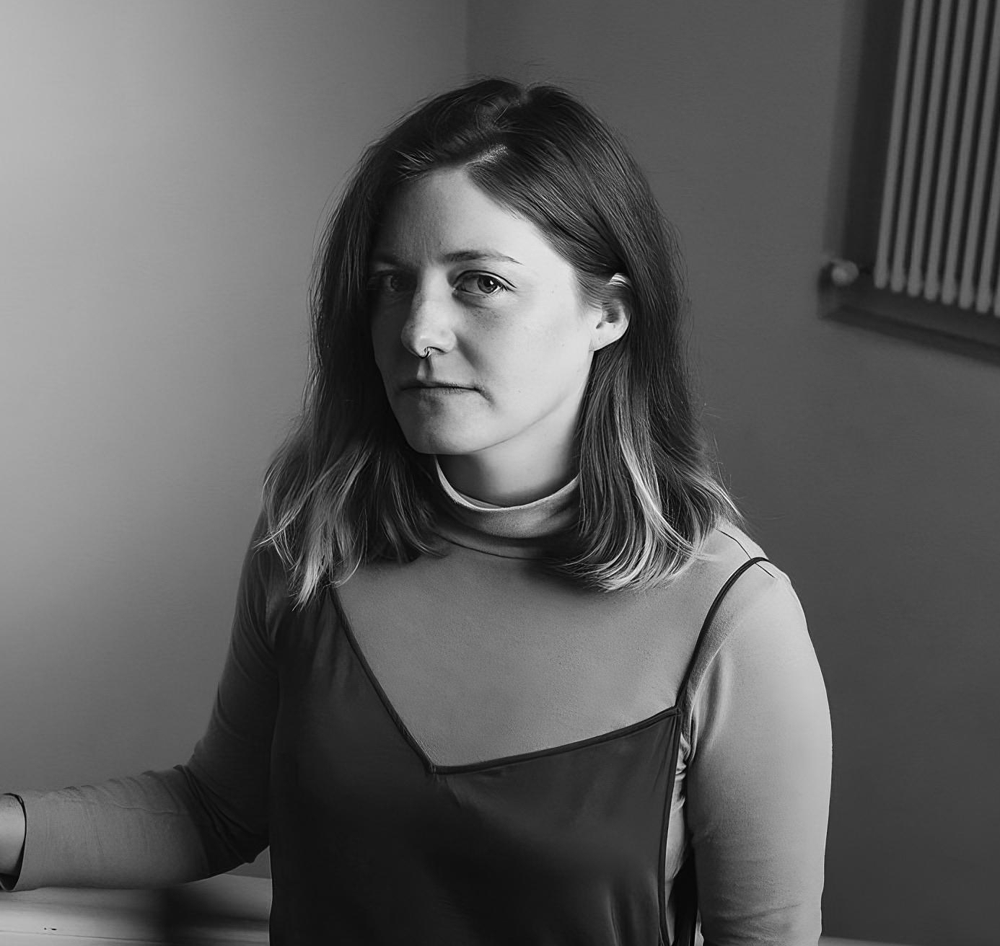
Tracy Fuad's second book of poetry, PORTAL (University of Chicago, 2024) won the 2023 Phoenix Emerging Poets Prize. A 2023 National Endowment for the Arts Fellow, Fuad's poems have appeared in The Paris Review, The Yale Review and The New Republic and have been translated into Kurdish, Turkish, German, and Spanish.
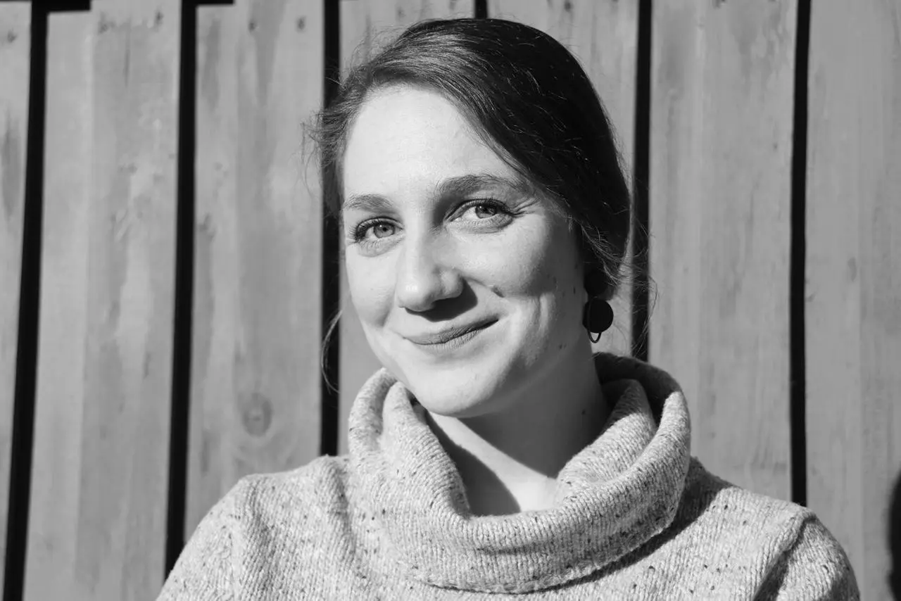
Holly Mason Badra received her MFA in Poetry from George Mason University in 2017, where she served as the blog editor for So to Speak: An Intersectional Feminist Journal of Language and Art. Her poems, interviews, and reviews have appeared in various journals, such as: The Northern Virginia Review, The Adroit Journal, The Rumpus, SWWIM Everyday, Circumference Magazine, Rabbit Catastrophe Review, Foothill Poetry Journal, The University of Arizona Poetry Center Blog, Bourgeon Online, Broad Strokes: The National Museum of Women in the Arts Blog, Outlook Springs, Entropy, and CALYX. She received a Bethesda Urban Partnership Poetry Prize selected by E. Ethelbert Miller. As a Kurdish-American poet, she has been a featured reader at annual Al-Mutanabbi Street Starts Here events and participated in RAWIFest 2021, as well as other events related to Kurdish diaspora writing/writers. She has been a reader at OutWrite (A Celebration of Queer Literature) in D.C. She has extensive experience as an educator, teaching elementary, middle, high school, and college English, Creative Writing, Humanities, and Literature courses. Holly currently lives in Northern Virginia, working as the Associate Director of Women and Gender Studies at George Mason University. She also reads for Poetry Daily.
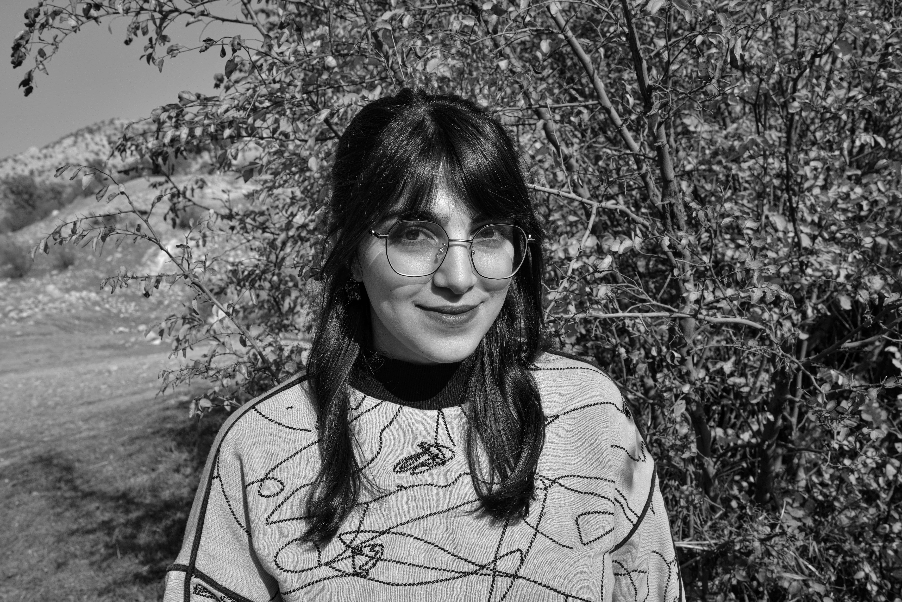
Shene Mohammed is a translator at the Kurdistan Center for Arts and Culture. Shene graduated with a Bachelor's degree from the American University of Iraq, Sulaimani, and is a Literary Translation MFA graduate from the University of Iowa. She has served as a Managing Editor for Exchanges Journal of Literary Translation. Her writing has appeared in Translation Review, Michigan Quarterly Review, Poetry, World Literature Today, M—Dash, Modern Poetry in Translation, Balinde, and Chirok.
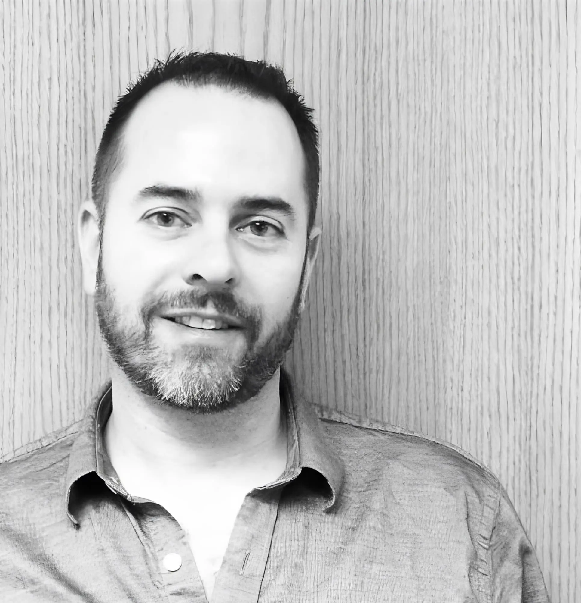
Chad W. Post is the director of Open Letter Books, a press at the University of Rochester dedicated to publishing contemporary literature from around the world. In addition, he is the managing editor of Three Percent, a blog and review site that promotes literature in translation and is home to the Translation Database, the Best Translated Book Awards, and the Three Percent and Two Month Review podcasts. He is also the author of The Three Percent Problem: Rants and Responses on Publishing, Translation, and the Future of Reading. His articles and book reviews have appeared in a range of publications including The Believer, Publishing Perspectives, the Wall Street Journal culture blog, Bookforum, Rolling Stone, and Quarterly Conversation, among others. In 2018, he received the Ottaway Award for the Promotion of International Literature.
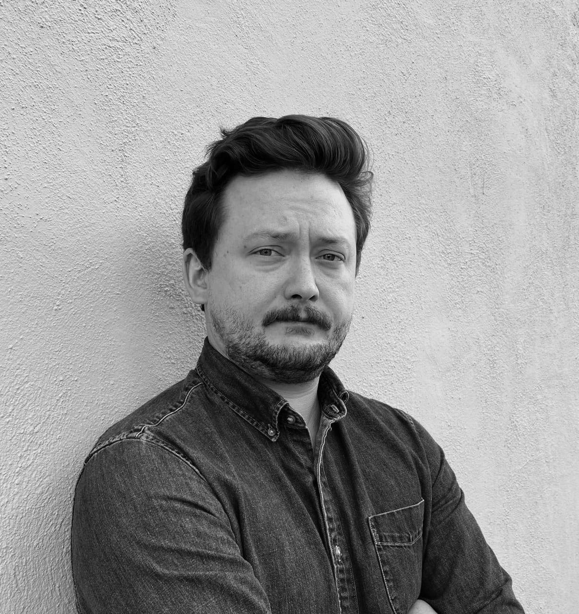
Gary Lovely is co-owner of the bookstore Two Dollar Radio HQ and the founder of Harpoon Books, an indie publishing company based in Columbus, Ohio. Gary has been working in books for nearly 16 years across 5 bookstores and 2 publishing houses. He has written about books for the New York Times, Literary Hub, Buzzfeed Books, and more. Gary has been a judge for the National Book Awards for Translated Literature, The Cercador Prize for Literature in Translation, & The James Thurber Prize for American Humor. He is the current Vice President of the Great Lakes Booksellers Association.
We'd love to hear from you! Whether you have questions about our books, database, submission process, volunteering, or just want to say hello, don't hesitate to reach out.
For press inquiries, rights, or general questions, please use the contact form.